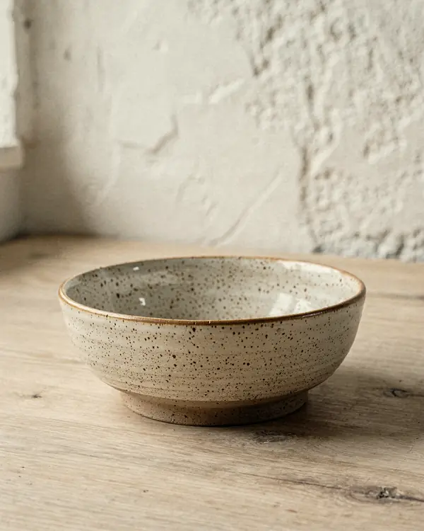
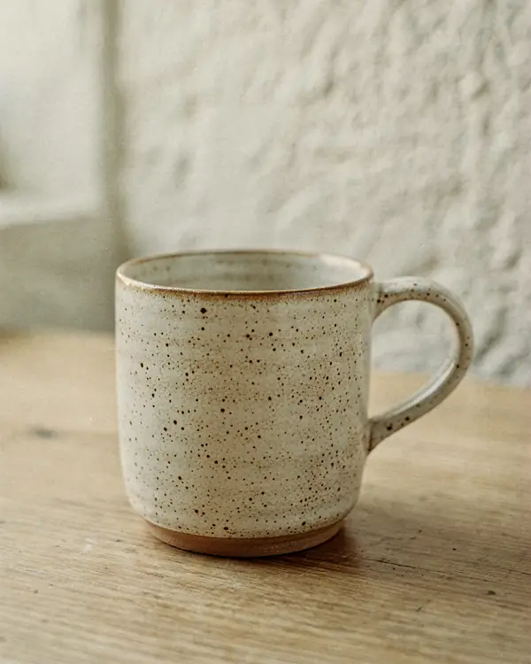
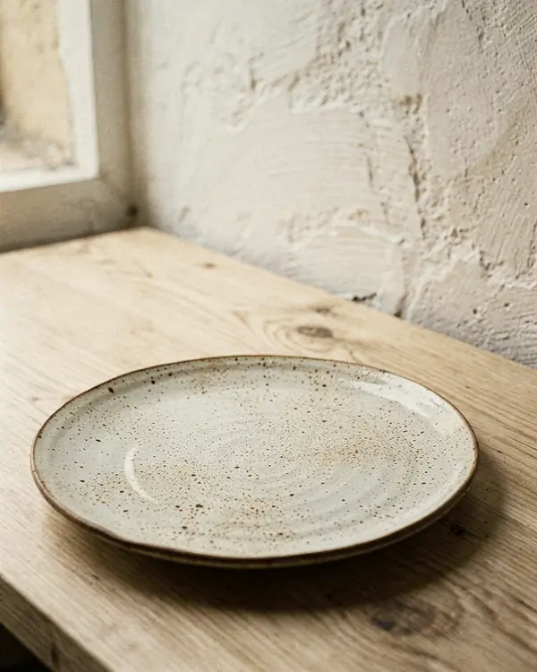

NouveauBol Craie
Ø 14 cm, émail mat, passe au lave-vaisselle.
34 €
Grès tourné et émaillé à la main, au Sablon. Gardez vos pièces préférées d'un clic sur « J'aime ». Démo : textes fictifs.

NouveauØ 14 cm, émail mat, passe au lave-vaisselle.

20 cl, anse ronde, émail brillant à l'intérieur.

Ø 26 cm, bord irrégulier, chaque pièce est unique.